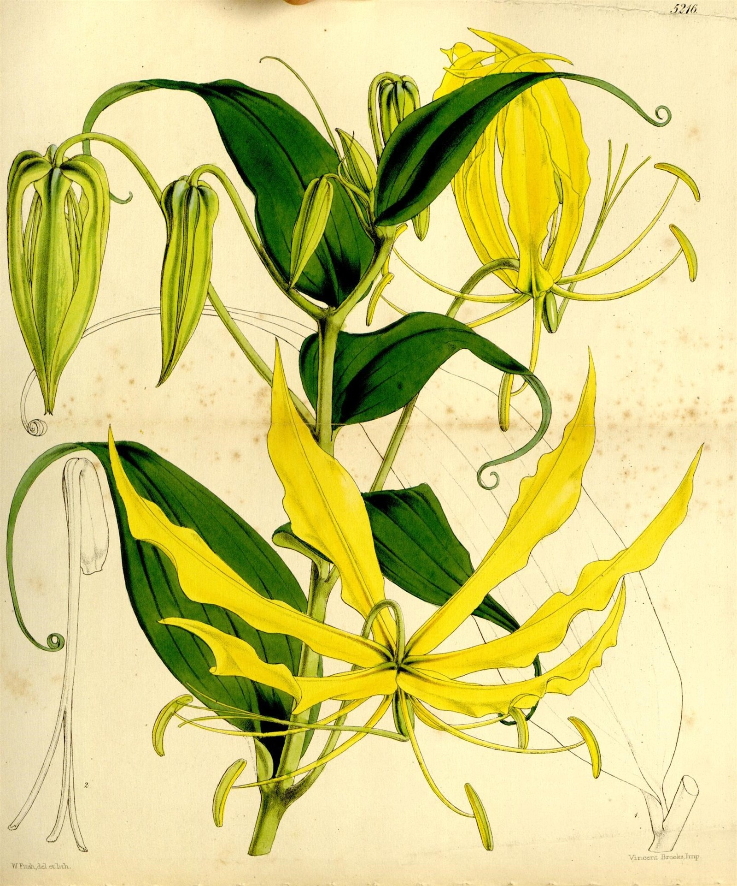

Projecting the impact of an ebola virus outbreak on endangered mountain gorillas
A modelling study of outbreak scenarios in the Virunga Massif, spanning Uganda, Rwanda and the Democratic Republic of Congo.
Read the original ↗Read the paper. Explore the evidence. Follow the next question.
Explore ↓
4 sources
A modelling study of outbreak scenarios in the Virunga Massif, spanning Uganda, Rwanda and the Democratic Republic of Congo.
Read the original ↗A national assessment of wildlife, habitats, pressures and conservation responses.
Read the original ↗An earlier assessment to consult alongside later reports when exploring change over time.
Read the original ↗An introduction to the Baganda craft, its materials and cultural context.
Read the original ↗Where was the work done? Does its scope include Uganda?
Was it an observation, experiment, model or review?
What remains uncertain? What would you need to know next?